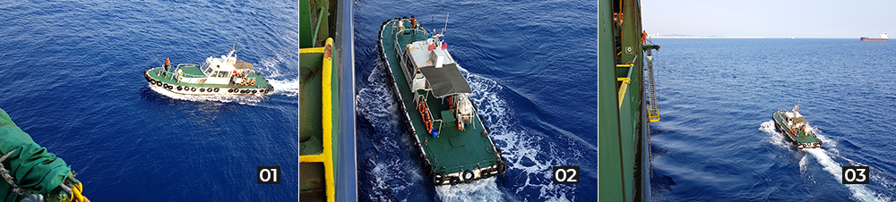
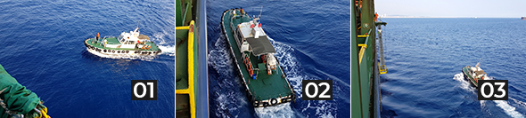
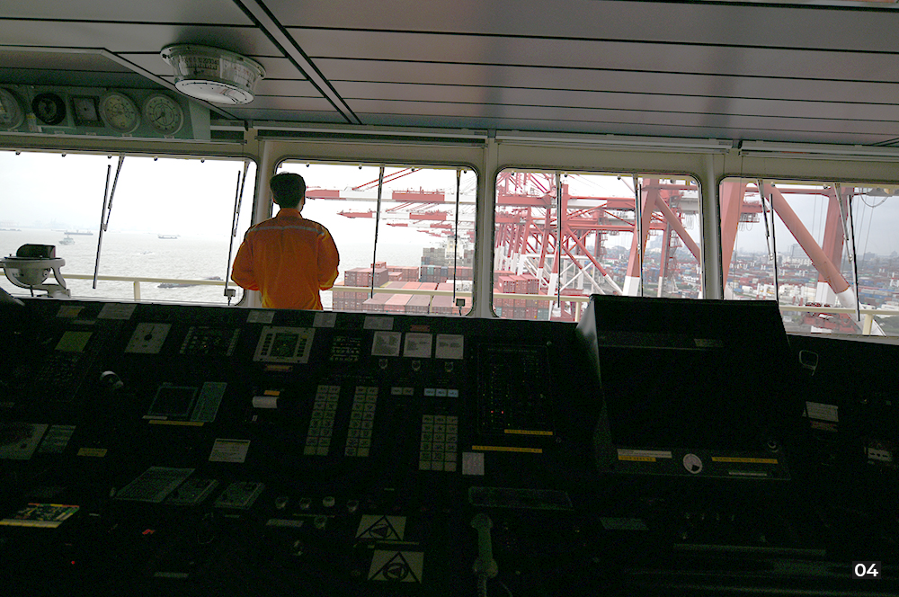
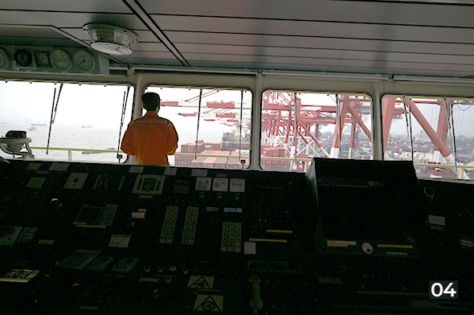
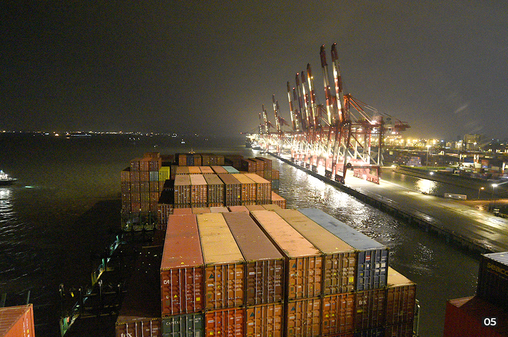
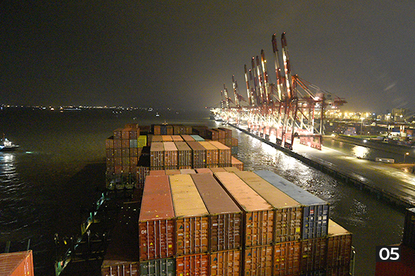

와 제 롤모델이 잡스에요!!! 아이폰 첫 출시되고 나서부터 계속 아이폰 쓰고 있는데 잡스가 너무 그리워요ㅠㅠ 지금은 돈만 벌려고 하는 것 같아서 디자인 발전도 없고ㅠㅠ와 제 롤모델이 잡스에요!!! 아이폰 첫 출시되고 나서부터 계속 아이폰 쓰고 있는데 잡스가 너무 그리워요ㅠㅠ 지금은 돈만 벌려고 하는 것 같아서 디자인 발전도 없고ㅠㅠ와 제 롤모델이 잡스에요!!! 아이폰 첫 출시되고 나서부터 계속 아이폰 쓰고 있는데 잡스가 너무 그리워요ㅠㅠ 지금은 돈만 벌려고 하는 것 같아서 디자인 발전도 없고ㅠㅠ와 제 롤모델이 잡스에요!!! 아이폰 첫 출시되고 나서부터 계속 아이폰 쓰고 있는데 잡스가 너무 그리워요ㅠㅠ 지금은 돈만 벌려고 하는 것 같아서 디자인 발전도 없고ㅠㅠ와 제 롤모델이 잡스에요!!! 아이폰 첫 출시되고 나서부터 계속 아이폰 쓰고 있는데 잡스가 너무 그리워요ㅠㅠ 지금은 돈만 벌려고 하는 것 같아서 디자인 발전도 없고ㅠㅠ
What’s Your Story
The Shanghai
Departure of
the M/V Hyundai
Courage
The Shanghai
Departure of
the M/V
Hyundai
Courage
Seongmin Kim(HMM HQ)
On November 13, I visited Shanghai to accompany and support two media reporters who were covering the shipping industry onboard M/V Hyundai Courage departing from Shanghai Port to Gwangyang Port. Our schedule was a short one, departing on the 15th and disembarking on the 16th, but it was delayed two days due to unexpected reasons.
Familiar reasons for a ship’s delay include weather deterioration or port congestion. M/V Hyundai Courage arrived at Shanghai Port one day later than planned due to one of these reasons. As a result, the schedules were delayed for a departure on the 16th and disembarkation on the 17th. In addition, the ship was faced with a somewhat unfamiliar problem of a pilot disembarking from the ship.
A pilot plays the role of safely guiding a ship by boarding it at a certain point, such as a port, a canal, or a river, and securely navigating a ship to a berth. Pilots are aware of all the situations, such as tides and the water depth of each port, which is indispensable when entering and departing from a port.


01-03A pilot boat approaches a ship
In the case of Shanghai Port, unlike Busan and Gwangyang Port, a ship should sail on the Yangtze River for about five hours to arrive at or depart from it. When a ship enters the port, a pilot embarks at the entrance of the Yangtze River and disembarks at Shanghai Port. When a ship departs from Shanghai port, a pilot boards at Shanghai Port and disembarks at the entrance of the Yangtze River. The problem is that when the weather is bad, a pilot cannot disembark from a ship at sea.
M/V Hyundai Courage, which was about to depart at 17:00 on November 16, fell into a dilemma caused by the problem of a pilot disembarking. When considering the weather, it is predicted that when the ship passes through the Yangtze River and sails to the Yellow Sea, a pilot will not be able to disembark. If the pilot cannot leave, the ship has to anchor on the coastal waters until the pilot is able to.
Of course, there was an alternative option. A pilot can disembark at the inside of the Yangtze River without going to the Yellow Sea. However, in the Yangtze River, where there are many passenger ships sailing, it is only possible, for safety reasons, for a pilot to get off during the day time, and therefore, not possible to get off at night. If the ship departs at the scheduled time of 17:00, the sunset will start and the ship will be unable to disembark the pilot inside the Yangtze River after five hours sailing along the river in Shanghai Port.


04M/V Hyundai Courage prepares for departure after finishing cargo operation
Fortunately, the ship’s unloading process at Shanghai Port was completed around 12:00. If it departs early, it can arrive at Gwangyang Port, the next destination, after the pilot disembarks in the middle of the Yangtze River. Despite the efforts of the ship’s crew, however, it was unable to proceed with departure. The draft (the depth of the water-immersed portion of a ship) of M/V Hyundai Courage, which is a large-scale 8,600TEU class, was about 10m deep and had to wait until 17:00 for the flood tide because the depth of the Yangtze River was shallow.
If the ship cannot depart early, it would have to depart late. If the ship departs at about the dawn of 17th, it would be possible to drop the pilot at the inside of the Yangtze River. However, it was difficult for the ship which had completed the unloading process to continue to wait at berth in a situation where many ships were waiting.


05M/V Hyundai Courage departs Shanghai Port after 17:00
At last, M/V Hyundai Courage departed at 17:00 on the 16th and left the Yangtze River and arrived at the Yellow Sea around 22:00 of the same day. The ship had to anchor because the pilot could not disembark due to rough waves late at night. On the morning of the next day, since the waves and wind were in good condition, the Master continuously made requests to the center supervising the pilot for him to disembark. The pilot who was on board also requested an earlier disembarkation, but the permission from the center was made much later at 17:00.
If the pilot’s disembarkation was smooth, the ship which would have departed for Gwangyang Port on the evening of the 16th, or at least the dawn of 17th. Unfortunately, it had to leave late in the evening of the 17th.
“It is very unusual for a ship to anchor for one day while carrying a pilot. The pilot could not disembark due to safety matters as the weather was getting worse, but there is a solution on the part of Shanghai Port. It was a situation where the ship had to speed up a little more to arrive at a destination at a scheduled time,” said the ship’s Captain Seo, Min-soo who had a spare moment as the ship entered the Yellow Sea.
If there was active cooperation on the part of Shanghai Port, would M/V Hyundai Courage have been able to depart a little earlier? Even though the schedule was late, it was an opportunity for me to experience the hard work of the ship’s crew members and shore staff who had strived to operate the ship on time even under a variety of harsh conditions.
-
Great
322
-
Like
322
-
Sad
322
-
So-so
322
-
Angry
322